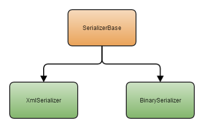
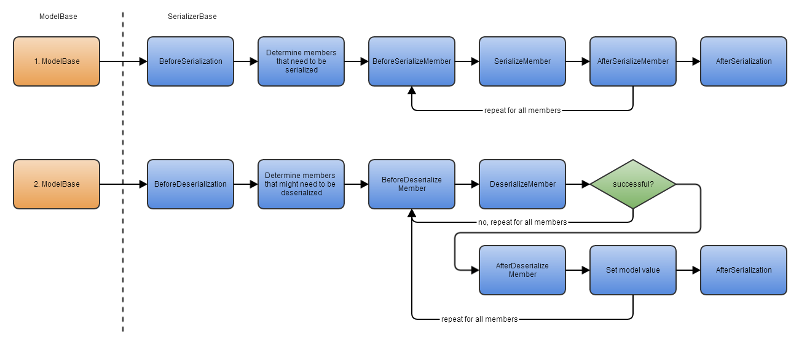

The serialization engine explained
All classes deriving from ModelBase use the serialization engine of Catel to serialize itself in a whole or as a subset of properties. Below is a schema which sheds some light on the architecture.

The SerializerBase now contains all the serialization and deserialization logic. The advantage is that this logic is no longer contained by the ModelBase itself which makes the class much simpler to understand and maintain. Now the SerializerBase contains all the heavy lifting, the deriving classes (XmlSerializer and BinarySerializer) only have to implement a few methods.
The serialization process works as shown in the diagram below:

Workflow 1 represents the serialization. Workflow 2 represents the deserialization.